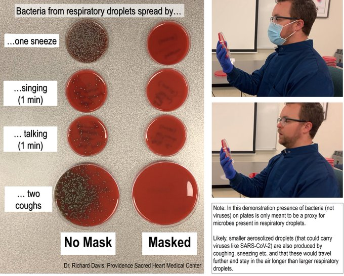
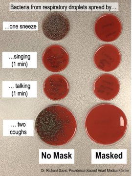
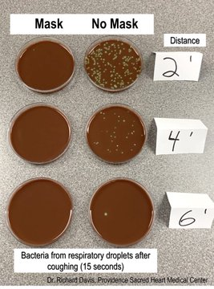

I'm aware that this simple (n=1) demo isn't how you culture viruses or model spread of
SARS-CoV-2.
But colonies of normal bacteria from my mouth/throat show the spread of large respiratory
droplets, like the kind we think mostly spread #COVID19, and how a mask can block them!

What does a mask do? Blocks respiratory droplets coming from your mouth and throat.
Two simple demos:
First, I sneezed, sang, talked & coughed toward an agar culture plate with or without a mask.
Bacteria colonies show where droplets landed. A mask blocks virtually all of them.

What about keeping your distance?
Second demo: I set open bacteria culture plates 2, 4 and 6 feet away and coughed (hard) for
~15s. I repeated this without a mask.